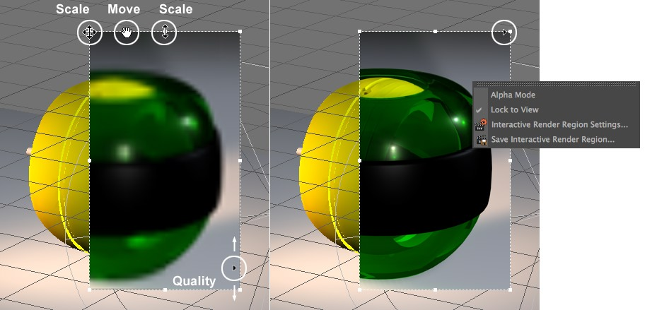
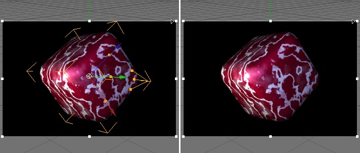

Function available in CINEMA 4D Prime, Visualize, Broadcast, Studio & BodyPaint 3D
交互式区域渲染

在边框上点击右键会打开选择菜单。
交互式区域渲染（下文简称 IRR）是一个有效且实用的工具，它能极大地提高测试渲染的速度。IRR 可以自由地放置和缩放，并按照设定的分辨率保持渲染状态。IRR 会自动与场景一起保存。当选择了新的区域后，该区域会重新渲染，编辑对象或做出其他任何修改都会影响渲染状态。
即使在低分辨率下，IRR 提供的的预览都会提供看上去类似最终渲染的效果。IRR 可以使用区域边框的手柄来缩放和移动，在 IRR 右边框上你可以找到一个三角形滑块，你可以用它调节渲染的分辨率，当然，渲染质量越高，预览要花费的时间也越长。
当滑块移动到顶部时会使用最好的渲染质量。
在 IRR 边框上点击右键会打开一个选择菜单。
提示
当使用了投影为软阴影的灯光时，贴图会在缓存在场景路径下的 illum 文件夹中，这只是为了加快渲染速度，如果不需要你可以删掉这个文件夹。
当使用了投影为软阴影的灯光时，贴图会在缓存在场景路径下的 illum 文件夹中，这只是为了加快渲染速度，如果不需要你可以删掉这个文件夹。
提示 2
IRR 不能与 CineMan 一起使用，它会使用 CINEMA 4D 渲染引擎。
IRR 不能与 CineMan 一起使用，它会使用 CINEMA 4D 渲染引擎。
提示 3
注意，IRR 可以被草绘覆盖。
注意，IRR 可以被草绘覆盖。
在 IRR 边框上点击右键会打开一个包含相关设置的菜单。
根据是否启用了这个选项，会决定在选择的渲染区域中是渲染正常的视窗背景（如果启用，则会生成一个略微抗锯齿的物件）还是一个黑色背景（所有区域会正常在 alpha 通道中渲染为黑色）。
提示
如果要看到物理天空的 2D 云（CINEMA 4D Studio），应该禁用这个选项，因为 Alpha 通道会无视 2D 云。
如果要看到物理天空的 2D 云（CINEMA 4D Studio），应该禁用这个选项，因为 Alpha 通道会无视 2D 云。
如果启用它，当你切换视窗是，IRR 不会在新的视窗中显示；如果禁用，IRR 会在你切换的视窗中显示。
启用或禁用 IRR 渲染。
定义渲染分辨率质量，你也可以用 IRR 右侧的滑块来交互地调节。
见上文。
见上文。
左：配件覆盖启用；右：禁用。
如果启用，配件和坐标轴会覆盖显示在 IRR 渲染区域中，如果禁用，则不会显示（但是会存在于渲染区域后面并且可以使用它们）。
如果需要的话这个命令可以通过键盘快捷键来执行。
在 BodyPaint 3D 中的限制
IRR 在 3D Paint 模式下无效。